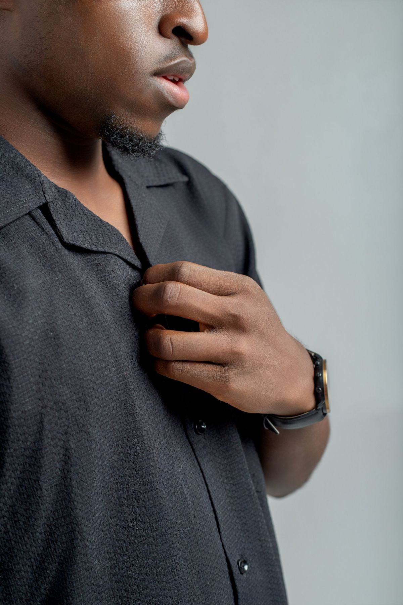

Made, not merely styled.
How we approach materials, tailoring and detail. Tap the numbered markers on each photograph to see what to look for.

The pocket is part of the shape.
- 1
Squared corners
The patch pocket is folded to a clean right angle at each corner.
- 2
A second line of stitching
A line of stitching runs across the pocket, below its opening.
- 3
A stitched hem
The hem is turned and stitched in a thread close to the colour of the cloth.

Stripes, turned on purpose.
- 1
Shaped facing
The V-neck facing is cut on a different line, so the stripes change direction around the neck.
- 2
One button
A single button closes the placket at the base of the V.
- 3
Cap sleeve
A short cap sleeve keeps the line of the top relaxed.
Fabric, confirmed with you.
We choose fabrics for how they look, move and wear on the body. Where a garment’s fabric is confirmed, you will find it listed with the design in the collection.
Fabric availability changes from one order to the next. Before we make anything, we confirm with you which fabric and colour are available for your piece, and tell you if the one photographed can no longer be supplied.
Recognised without a logo.

Silhouette
Relaxed shapes with a clear structure, like the cape sleeve on the coral-red linen dress.

Proportion
Cropped tops over ¾ trousers. Lengths are decided, not defaulted.

Material
Texture can do the work. A textured black cloth needs no pattern.

Construction
A stand collar and half placket, cut and pressed clean.

Restraint
One print, one colour, one idea per garment.

Purposeful detail
A contrast stitch at the hem, seen only when you look.
Your request
You choose a design, ask for a variation, or send us an idea.
Confirmation
We confirm whether it can be made, the fabric available, and the price.
Measurements
We take you through the measurements we need for your piece.
Tailoring
Once everything is agreed, your garment is made through our tailoring network.